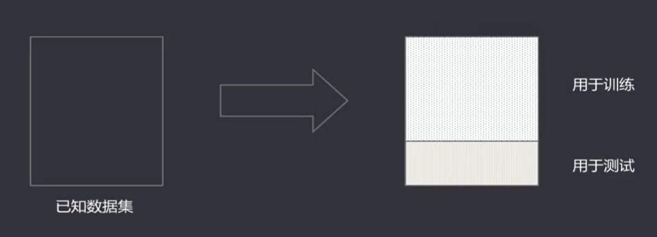
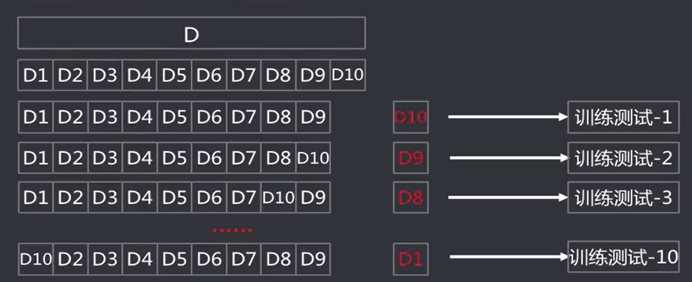
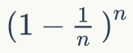

数学——模型评估方法
本文最后更新于：1 年前
摘要
最近在学习机器学习的一些相关的算法，在学习过程中新接触到了大量的概念和原理。为了更好地提高学习的效果，于是就把在学习的过程中接触到的新概念和遇到的问题通通写进我的博客，作为学习笔记，以提供给自己和其他朋友进行查阅和参考。
这篇内容主要是讲述数学模型的模型评估方法，将会对新的概念进行逐一解读。有条件的还会对相关的内容进行拓展资料的整理，其主要内容如下：
新的概念
评估思路
经过实验测试，对模型的泛化误差进行评估，选出泛化误差最小的模型。待测数据集未知，使用测试集进行泛化测试，测试误差（Testing Error）即为泛化误差的近似。

::: warning
需要注意:
测试集和训练集要保持互斥：即测试集和训练集不能相同，就像数学题中的例题和测试题一样，用的方法和原理要相同，但是做法不一致。
测试集和训练集要服从独立同分布：即测试集和训练集所取得数据要保证同源，即要保证他们有相同的期望和方差，且相互独立。
:::
评估方法
留出法（Hold-out）
概念：讲已知数据集分成两个互斥的部分，其中一部分用来训练模型，另一部分用来测试模型，评估其误差，作为泛化误差的估计。
::: warning
需要注意：
两个数据集的划分要尽可能保持数据分布一致性，避免因数据划分过程引入认为的偏差：即划分之后的数据要尽可能使他们独立同分布。
数据分割存在多种形式会导致不同的训练集，测试集划分，单次留出法结果往往存在偶然性，其稳定性较差，通常会进行若干次随即划分、重复实验评估取平均值作为评估结果。
数据集拆分成两部分，每部分的规模设置会影响评估结果，测试训练的比例通常为7:3、8:2等
:::
交叉验证法(Cross Validation)
概念：将数据集划分成k个大小相似的互斥的数据自己，自己数据尽可能保证数据分布的一致性（分层采样），每次从中取一个数据作为测试集，其余用作训练及，可以进行k次训练和测试，得到评估均值。该验证方法也称作k折交叉验证(k-fold Cross Validation)。使用不同的划分，重复p次，称为p次k折交叉验证。

留一法（Leave-One-Out LOO）
概念：是k折交叉验证的特殊形式，将数据集分成两个，其中一个数据集记录条数为1，作为测试集使用，其余记录作为训练集训练模型。训练出的模型和使用全部数据集训练得到的模型接近，其评估结果比较准确。确定是当数据集较大时，训练的次数和计算规模较大。

自助法（Bootstrapping）
拽着自己的鞋带把自己从湖里提起来.
—巴龙伯爵历险记
概念：是一种产生样本的抽样方法，其实质是有放回的随机抽样，即从一直数据集中随机抽取一条记录，然后将该记录放入测试集同时放回原数据集，继续下一次抽样，直到测试集中的数据条数满足要求。
::: tips
要点:
- 假设已知数据集 D 含有 n 条数据，采用自助法得到一个记录条数为 n 的测试集 T 。D 中的一些数据会在 T 中出现多次，还有一些数据不会出现。
- 估算一下经过 n 次有放回采样后，大概多少记录未被选中：
- 某一次具体的采样，一条数据被选中的概率为 1/n，未被选中的概率为：1- 1/n
- 连续 n 次采样均未被选中的概率为：，取极限：

- 通过有放回的抽样获得的训练集去训练模型，不在训练集中的数据（总数量的 1/3）去用于测试，这样的测试结果被称为包外估计（Out-of-Bag Estimate, OOB）
小结
适用场景
留出法
实现简单、方便，在一定程度上能评估泛化误差
测试机和训练及分开，缓解了过拟合
- 一次划分，评估结果的偶然性大
- 数据被拆分后，用于训练、测试的数据更少了
交叉验证法（留一法）
k 可以根据实际情况设置，充分利用了所有样本
多次划分，评估结果相对稳定
- 计算比较繁琐，需要进行 k 次训练和评估
自助法
样本较小时可以通过自助法产生多个自助样本集，且有约36.8%的测试样本
对于总体的理论分布没有要求
- 无放回抽样引入了额外的偏差
几种方法的选择
- 已知数据集数量充足时，通常采用留出法或者 k 折交叉验证法
- 对于已知数据集较小且难以有效划分训练集/测试集的时候，采用自助法
- 对于已知数据集较小且可以有效划分训练集/测试集的时候，采用留一法。
本博客所有文章除特别声明外，均采用 CC BY-SA 4.0 协议 ，转载请注明出处！